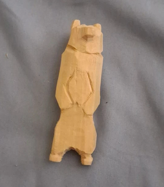
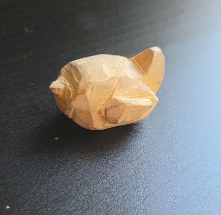
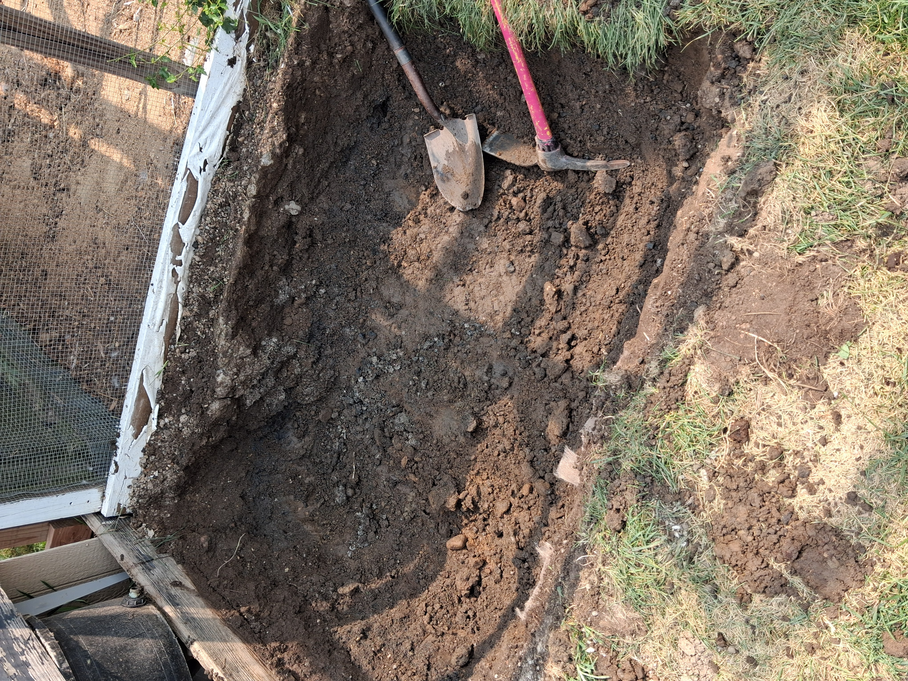
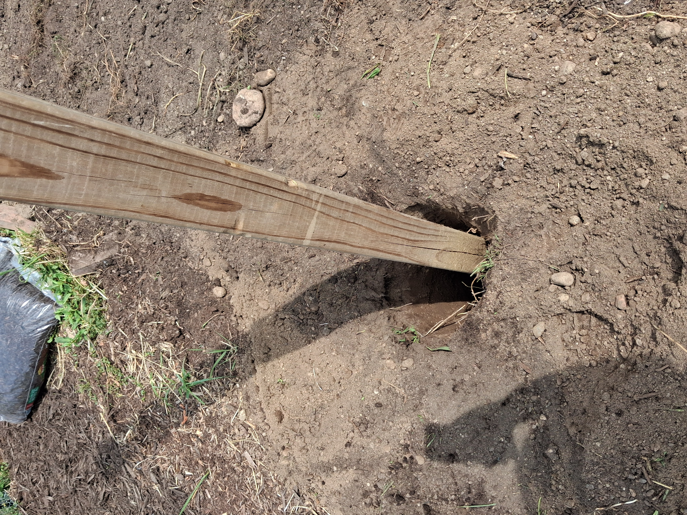

Spoon
After I got my set of knifes, I got carving! This spoon is an original design, made out of basswood, originally I was gonna use it for soups and ice cream, but I made it way too deep and thick, so it's mostly just a decoration piece now.
AS I said before, one of the most important parts in a student's life is their projects. They show an aptitude most often they simply can't show in school, maybe due to shyness, uninterest, or simply because they got nobody to show it to. Still, independent projects demonstrate a student's abilities outside school and their capability of independent thinking.
After I got my set of knifes, I got carving! This spoon is an original design, made out of basswood, originally I was gonna use it for soups and ice cream, but I made it way too deep and thick, so it's mostly just a decoration piece now.

One of the first sculptures I made, even before the spoon, this one's my second shot, sadly I didn't take a photo of the first one, but it's not that bad.

My most recent piece, made it after a six month hiatus, it's not half bad, maybe next carving I will paint, hard to know with my head.

Quite a jump, heh? At Maybury Farm they have this little spot next to the barn where they wash the plates, tools and buckets they use to feed and clean the animals. the water they use gets "drained" at a spot just behind the wash spot, sadly on the first attempt at the drainage system they used way too small rocks, which made all the dirt and stuff stick to the gravel and not drain properly, basically just making a puddle of still, dirty water that stank. So, with help of my supervisor, volunteers and machines, we dag the whole thing out, and replaced with a better system, bigger rocks on top, smaller rocks on bottom, haven't seen it puddle since.

Next to the Garden they had this spot with a tent and benches for volunteers and visitors to rest. I don't know why, but we were tasked with moving it, this was one of the few(if not only) times where I was one of the main people helping, back in the drainage hole I only helped dig, the actual system was made by other volunteers and supervisors, this project was made mostly by me, another volunteer and a supervisor, which felt good. Basically we made holes, mixed cement, put the poles that hold the tent in the holes and filled the holes with cement we mixed.

More projects to come, I wanna make TARS from Interstellar, a miniature robotic Rocky from Project Hail Mary and my own violin, so yeah, more projects will come.